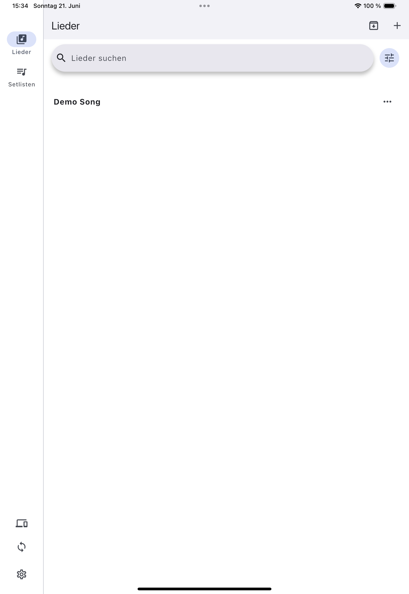
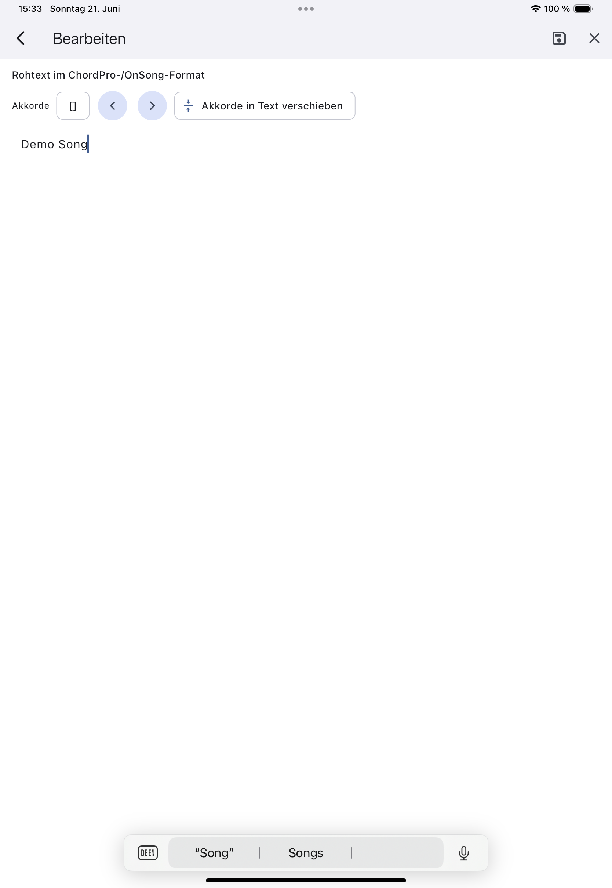
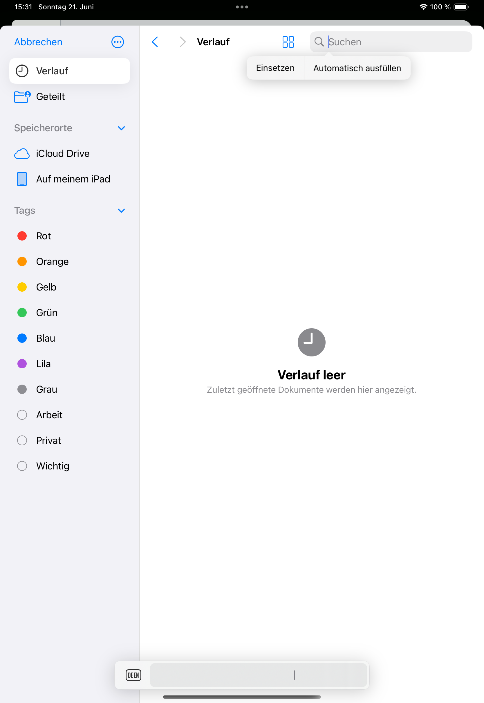
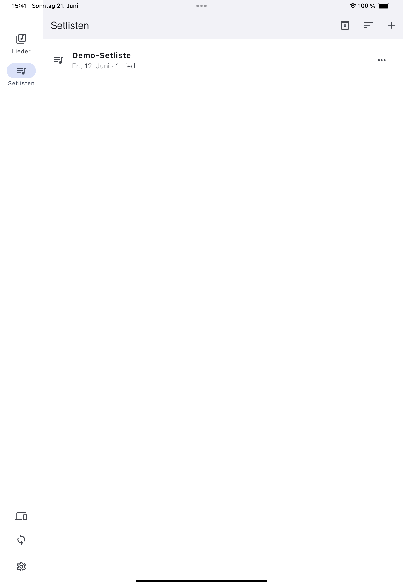
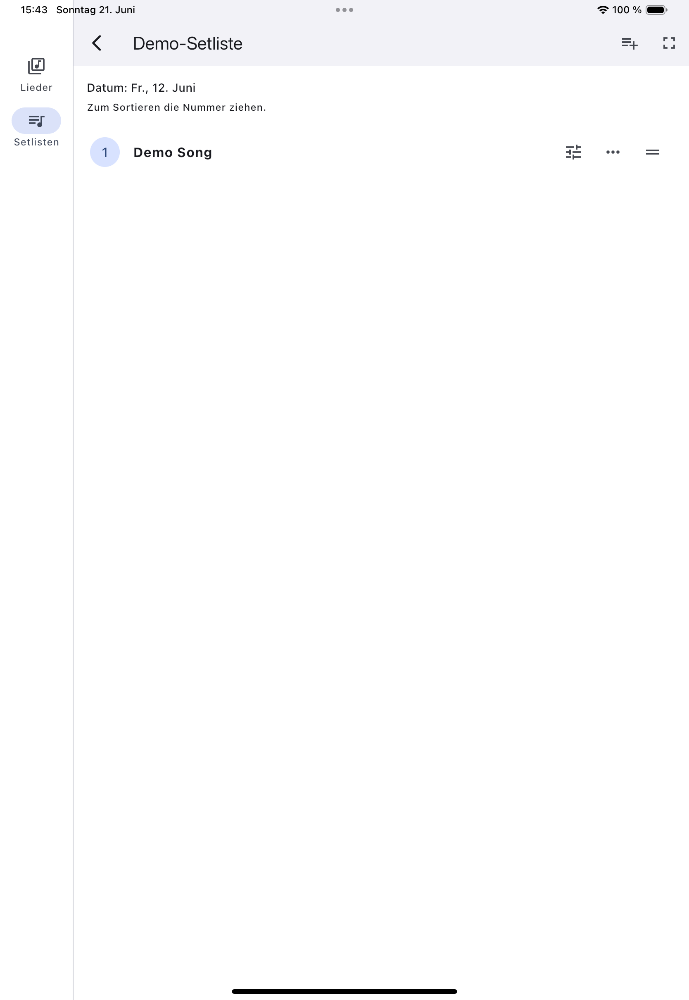
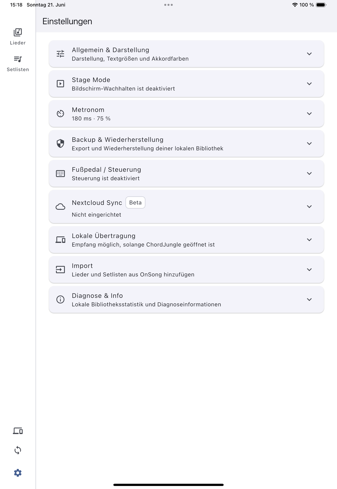

Beta-Handbuch · App-Build 0.2.0+4
ChordJungle Handbuch
Kurze, praktische Hilfe für Songs, Setlisten und den Weg auf die Bühne – mit ehrlichen Hinweisen zum aktuellen Beta-Stand.
Die Beispiele zeigen die deutsche iPad-App. Auf Smartphone und Desktop kann die Darstellung etwas abweichen.
Schnellstart
In fünf kleinen Schritten bereit.
- Test-Song anlegenUnter Songs einen kurzen Song erstellen oder eine Textdatei importieren.
- Rohtext prüfenDanach die Vorschau öffnen und Lesbarkeit kontrollieren.
- Setliste bauenEine kleine Probe- oder Gottesdienst-Setliste vorbereiten.
- Stage Mode testenNavigation und Lesbarkeit vor dem Einsatz ausprobieren.
- Backup testenEin Backup erstellen und mit unkritischen Daten wiederherstellen.
01 · Erste Schritte
Deine Bibliothek bleibt auf deinem Gerät.
In der Navigation findest du Songs, Setlisten, optionalen Sync und Einstellungen. Lesen, Bearbeiten und Stage Mode funktionieren grundsätzlich ohne Internet. Im Rohtext-Editor bearbeitest du Titel, Interpret und Ausgangstext; die Vorschau bereitet Akkorde und Strukturangaben lesbar auf, ohne den Rohtext umzuschreiben.

02 · Songs
Songs anlegen, lesen und aufräumen.
- Songs öffnen und auf + tippen.
- Leeren Song erstellen wählen.
- Titel, Interpret und bei Bedarf Tonart, Tempo oder Taktart eintragen.
- Text im Rohtext-Editor einfügen, speichern und die Vorschau prüfen.
Die Textgröße der Vorschau lässt sich mit zwei Fingern anpassen und wird für den Song gespeichert. Songs können gelöscht oder – wenn sie noch in Setlisten verwendet werden – archiviert werden.

03 · Import
Lokale Songdateien bewusst übernehmen.
Unter Songs → + → Aus Datei importieren eine Datei wählen, Titel und Rohtext prüfen und erst dann speichern. Unterstützt werden UTF-8-Textdateien wie .txt, .onsong, .chordpro, .chopro, .cho, .crd, .pro und .chord. PDFs und Medien-Dateien sind kein Einzeldatei-Import dieser Beta.

04 · Setlisten
Reihenfolge für Probe und Bühne vorbereiten.
Eine Setliste anlegen, klar benennen, Songs hinzufügen und in die gewünschte Reihenfolge bringen. Ein Song darf mehrfach vorkommen: Jede Stelle ist ein eigener Eintrag und kann eigene Notizen, Tempo- oder Transpositionsangaben haben.
Aktive Setliste führt zur aktuell ausgewählten Setliste und ihrem laufenden Song-Kontext zurück. Die allgemeine Ansicht Setlisten öffnet dagegen die Übersicht aller Listen.


05 · Stage Mode
Fokussiert, wenn es darauf ankommt.
Öffne eine Setliste oder einen Setlisten-Eintrag und starte den Stage Mode. Wischen oder sichtbare Steuerelemente navigieren durch die Song-Reihenfolge; ein Tipp in die Mitte blendet Steuerelemente im Vollbild ein oder aus. Über Zurück oder Schließen kehrst du zum aktuellen Song-Kontext zurück.
06 · Metronom
Tempo sichtbar und optional hörbar halten.
Hinterlege Tempo und bei Bedarf Taktart für Song oder Setlisten-Eintrag, dann starte das Metronom im Song- oder Stage-Kontext. Ton, Lautstärke, visuelle Stärke und Vibration sind in den Einstellungen anpassbar. Prüfe Medienlautstärke, Lautlosmodus und Bluetooth-Ausgabe; Bluetooth-Verzögerungen sind geräteabhängig.

07 · Backup & Wiederherstellung
Backup ist nicht Sync.
Ein Backup ist eine vollständige Momentaufnahme deiner lokalen Songbibliothek und Setlisten. Unter Einstellungen → Backup & Wiederherstellung kannst du eine Datei sichern und später bewusst wiederherstellen. Eine Wiederherstellung ersetzt die lokale Bibliothek und startet niemals automatisch einen Sync.
08 · Sync & Transfer
Für eigene Geräte – nicht als Team-Bibliothek.
Lokale Übertragung
Ausgewählte Songs oder Setlisten lassen sich zwischen Geräten im selben vertrauenswürdigen WLAN oder LAN übertragen. ChordJungle auf dem Empfänger öffnen, Übertragung auf dem Sender starten und den Empfang ausdrücklich bestätigen. Wenn kein Gerät gefunden wird, Netzwerk, Gast-WLAN, Firewall und lokale Netzwerkberechtigung prüfen.
Nextcloud/WebDAV-Sync
Der optionale Sync ist eine Beta-Funktion für eine Person mit mehreren eigenen Geräten, keine Echtzeit-Zusammenarbeit. Zugangsdaten und Ordner in den Einstellungen prüfen und den ersten Sync bewusst manuell starten. Ein Platzhalter kann etwa https://deine-cloud.example.com/remote.php/dav/files/... lauten.
09 · Einstellungen
Darstellung, Daten und Diagnose.
Die Einstellungen gruppieren Sprache und Darstellung, Stage Mode, Töne und Metronom, Backup & Wiederherstellung, Nextcloud Sync, lokale Übertragung sowie Diagnose & Info. Nicht jede Option ist auf jedem Gerät gleich relevant.
10 · Fehlerbehebung
Die häufigsten Stolpersteine.
Import sieht falsch aus
Rohtext-Editor prüfen: Die Datei sollte UTF-8-Text mit unterstützter Endung sein. Nicht unterstützte Direktiven können in der Vorschau ausgeblendet werden, der Rohtext bleibt erhalten.
Sync oder Transfer funktioniert nicht
Adresse, Zugangsdaten und Ordnerpfad prüfen. Für lokale Übertragung müssen beide Geräte im selben vertrauenswürdigen Netzwerk sein; Gast-WLAN, Hotspots und Firewalls können die Suche blockieren.
Backup lässt sich nicht wiederherstellen
Eine vollständige ChordJungle-Backup-Datei verwenden und bei Bedarf eine andere bekannte Sicherung testen. Die App-Version in einen Fehlerbericht aufnehmen.
Metronom ist nicht hörbar
Akustischen Tick, Medienlautstärke, Lautlosmodus und Bluetooth-Ausgabe prüfen. Das visuelle Metronom kann dennoch funktionieren.
11 · Beta-Feedback
Ein guter Bericht spart allen Zeit.
Feedback kannst du über Einstellungen → Diagnose & Info → Feedback senden senden. Beschreibe Plattform, Gerät, App-Version, Schritte, erwartetes und tatsächliches Ergebnis. Ein Screenshot oder kurzes Video hilft sehr.
Gerät: Betriebssystem: ChordJungle-Version: Was wollte ich tun? Was ist passiert? Was hätte ich erwartet? Kann ich es reproduzieren? Screenshot/Video vorhanden? Betrifft es Import, Sync, Backup, Stage Mode oder Transfer?